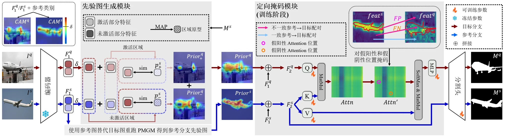
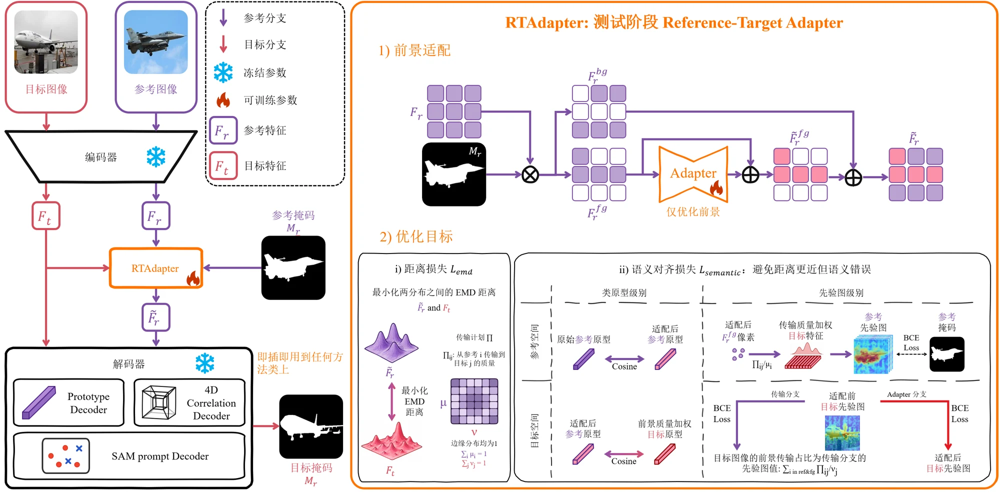
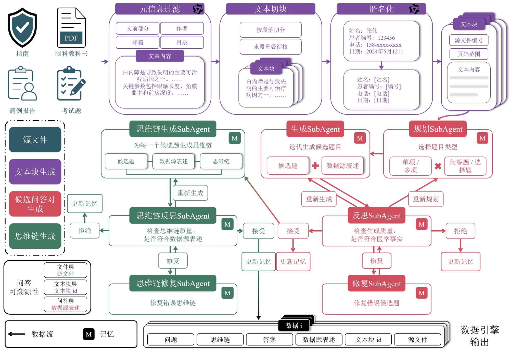

北京大学
2023.09 — 至今人工智能 · 博士在读
未来技术学院 · 预计 2028 年 6 月毕业
人工智能方向博士生
北京大学 · 未来技术学院
研究方向：计算机视觉
多模态大模型后训练
多模态智能体
医学影像分析
Beijing, China
更新于 2026 年 10 月
人工智能 · 博士在读
未来技术学院 · 预计 2028 年 6 月毕业
数据科学与大数据技术 · 学士
校级优秀毕业生 · 校级奖学金
荣誉美国大学生数学建模竞赛 Outstanding Winner（特等奖）
上下文分割：模型侧优化（IIR）与数据侧优化（RTAdapter）；眼科大模型后训练：可信指令数据构建（DeepEye-400K）。

方法图 ↗01 上下文分割 · 模型侧优化
Inter- and Intra-image Refinement for Few Shot Segmentation
2024.08 — 2025.09
上下文分割需要将参考图像中的目标信息迁移到新图像。大多数方法会经过一个 Encoder 后聚集参考前景特征得到前景类别向量，使用类别向量与目标向量进行相似度计算得到分割先验图，而后 Decoder 根据先验图得到分割结果。本文研究发现先验图准确性和预测结果准确性呈现线性关系。单一原型容易丢失局部细节，外观差异与前背景混淆又可能造成错误匹配，导致漏分和误检。
本文在 Encoder 阶段设计并实现了先验图生成模块，区分核心区域与局部细节，分别聚合区域原型；在 Decoder 阶段结合参考与目标双分支，在训练阶段通过定向掩码抑制错误对应，并用跨数据集实验与消融验证。
在 1-shot 设置下，PASCAL-5i 由 68.3 提升至 72.9，COCO-20i 由 46.9 提升至 53.1，分别提升 4.6 和 6.2 个百分点；实验覆盖标准、部件及跨域上下文分割的 11 个数据集。

方法图 ↗02 上下文分割 · 数据侧优化
Exploring the Upper Bound of In-Context Segmentation from a Data-Centric Perspective
2026.01 — 2026.10
不同的参考–目标图像组合经过相同的模型会产生不同的预测结果。研究以参考图像特征和目标图像特征之间的距离与预测准确性之间的关联为切入点，发现两特征相似度越高，预测性能越好。本工作探索保持分割模型不变，将最小化两特征分布的距离建模为最优传输问题，并通过测试阶段的参考特征适配改善信息迁移。
本文设计并实现轻量适配模块，冻结模型全部参数、保留背景特征，以残差方式仅更新参考特征的前景表示。通过降低最优传输问题对应的 EMD 分布距离和类别原型、先验图两级语义对齐约束，将模块接入原型、4D 相关性及 SAM 三类方法。
PASCAL 1-shot 上，FCP、PAHNet、Matcher、FSSAM 分别提升 1.0、1.3、3.8、1.3 个百分点。Matcher 的 mIoU 从 67.7% 提升至 71.5%，新增参数 0.526M（0.056%），计算量增加 1.48%，推理耗时增加 3.85%。

方法图 ↗03 专科数据与大模型
Agentic Data Engine for Evidence-Grounded Ophthalmic Instruction Synthesis
2025.09 — 2026.08
眼科大模型的专科适配需要高质量指令数据，目前虽然有研究尝试使用生成数据进行眼科大模型微调，但无法保证生成数据可靠性。即其生成的问题可能无法由原文回答，答案或推理解释也可能缺乏证据支撑。为此，本文将该问题拆解为两步：收集可靠的数据来源文本和构造可信的数据生成过程。
本文构建以原文证据约束生成、核验与修复的数据引擎，完成元信息过滤、切块与匿名化。通过规划、生成、反思和修复流程核验问答及解释的一致性，维护局部与全局记忆，将错误反馈用于后续生成，并保留源文件、文本块及证据表述的追溯关系。
本文构建 375,298 条眼科指令，用于 Qwen 9B 与 35B 模型后训练。在 Multi-Ophthalingua-Choice 的 164 条样本中，准确率较各自基线提升 3.66、4.26 个百分点，F1 提升 4.55、4.86 个百分点。
论文均在审。以上实验结果与论文状态依据个人研究材料整理。
多模态 Agent 算法岗
本项目面向眼底设备的自动影像分析，整合分类、检测、分割和量化工具，处理分类冲突及量化异常，生成带影像证据的可追溯报告。
本人负责专病分割与诊断、Agent 动态编排及报告展示，训练并融合专科视觉模型与 VLM。基于 ReAct 接入质控、12 类多标签分类、解剖定位、SAM 分割及血管量化工具，管理共享状态，按证据触发补充核验与交互分割，并配合团队完成云端服务及设备集成。
在抽取 200 张图像、224 个疾病条目的核验中，团队系统报告错误率从 5.36% 降至 1.79%，纠错率 75%、误改率 0.47%。视杯视盘分割 mDice 从 0.8805 提升至 0.9012，平均每目标交互 1.37 次。
系统对接 Kestrel 300、Kestrel 3100 及大广角设备，部署后日均服务约 4,000 份报告。